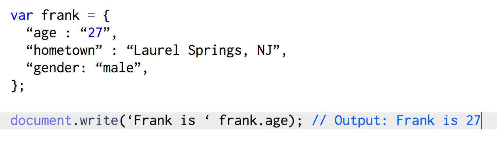
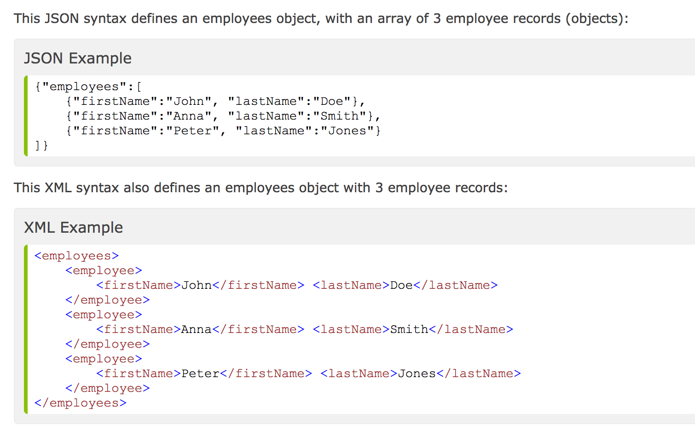

Who Is JSON And Why Should I Care?
November 17th, 2014
When I was Googling for JavaScript methods yesterday, I kept reading references to this guy named JSON, and I decided I needed to figure out what this guy is all about. Okay, so I knew that JSON wasn’t really a guy, and maybe that is a bad joke, but I was still curious about what exactly JSON does and how it is related to JavaScript. This is a brief introduction to JSON and at the end I include some resources for more information.
JSON stands for: JavaScript Object Notation. It is a lightweight data-interchange format. In layman’s terms, this means that it is a way to store information in an organized, easy to access manner. JSON uses JavaScript syntax, but the JSON format is text only which means it can be read and used as a data format by any programming language.
JSON is built on two universal data structures; a collection of name/value pairs and an ordered list of values. Most modern programming languages support these structures, which helps make the data format interchangeable with these languages. In JavaScript these structures are called objects and arrays. Below is a JSON data example, notice that it is identical to an object in JavaScript:
{kind=link}
AJAX makes it important for sites to be able to load data quickly and asynchronously (in the background without delaying page rendering). The main benefit of JSON is that it can be loaded asynchronously much more easily than XML/RSS alternatives. The example below illustrates how much simpler JSON is compared to XML:
{kind=link}
This has been a very brief introduction to JSON. I wanted to write this post to give me a basic understanding of what exactly JSON is because of how often it kept popping up when I was researching JavaScript. Please visit the links below for more details on how to use JSON.
www.json.org
www.w3schools.com/json
www.copterlabs.com/blog/json-what-it-is-how-it-works-how-to-use-it/
Thanks for reading.